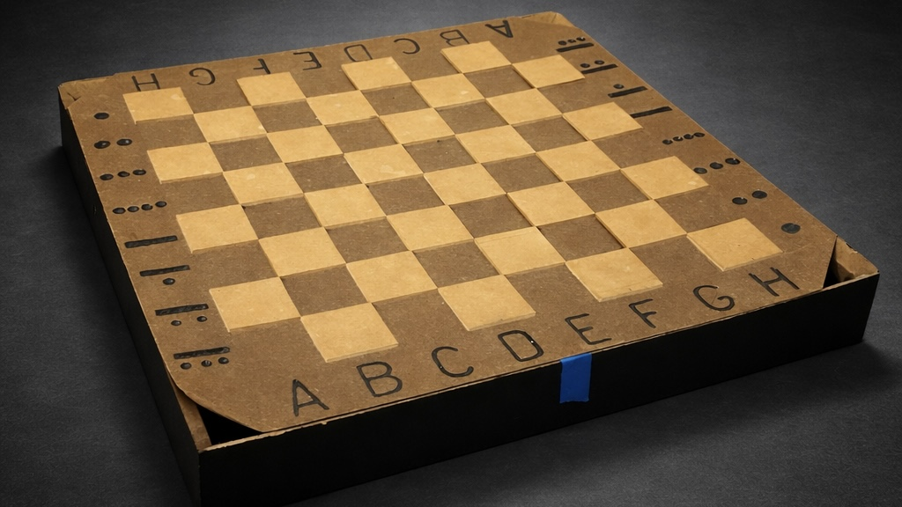
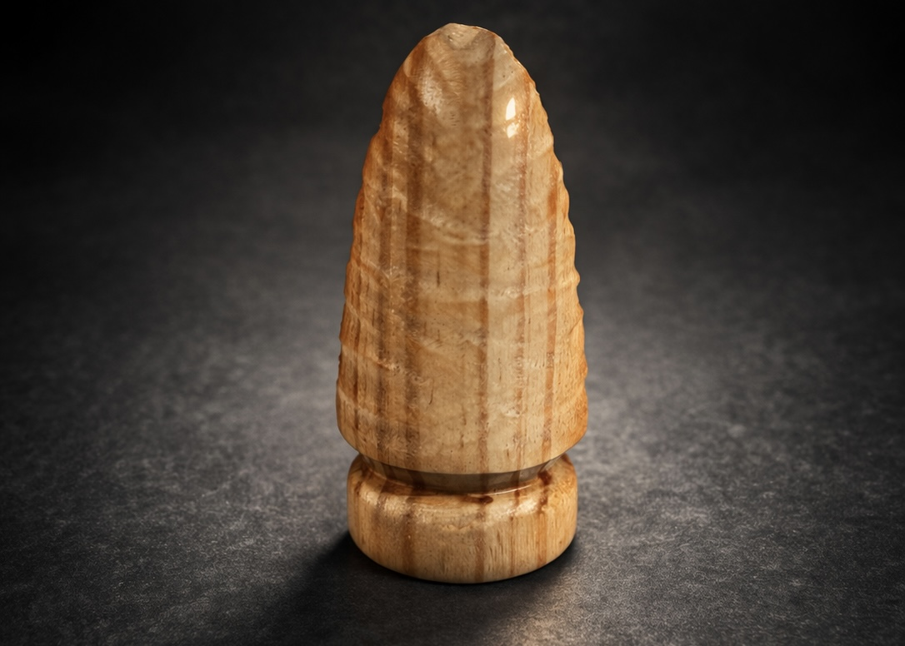

Ajedrez Prehispanico
trimestre 5 / Mayo 2025

El proyecto de ese trimestre consistia en hacer un tablero de ajedrez pero tenia que tener una tematica y yo escogi una tematica prehispanica, entonces hice un tablero de ajedrez con piezas prehispanicas, el tablero lo hice con madera y las piezas las hice con madera tallada, el resultado final me gusto mucho porque se veia muy bien y se veia muy profesional.
Concepto
La idea siempre fue eltablero con tematica prehispanica y mi pieza era una punta de lanza.
Proceso
El proceso fue muy complicado pero al final me ayudo mucho el tener claro que los cantos de union que queria usar tenian que ser a 45 grados y eso ayudo mucho al proceso de juntarlo y tambien me dio un resultado muy limpio

Resultado
Honestamente me gusto mucho el resultado final porque se veia muy bien y se veia muy profesional. De igual manera fue uno de los mejores tableros que hubo en esa clase.